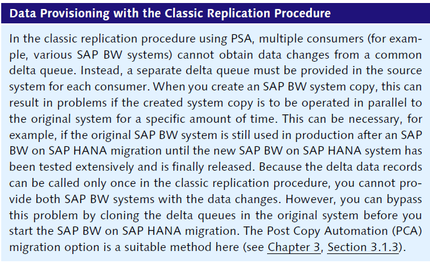
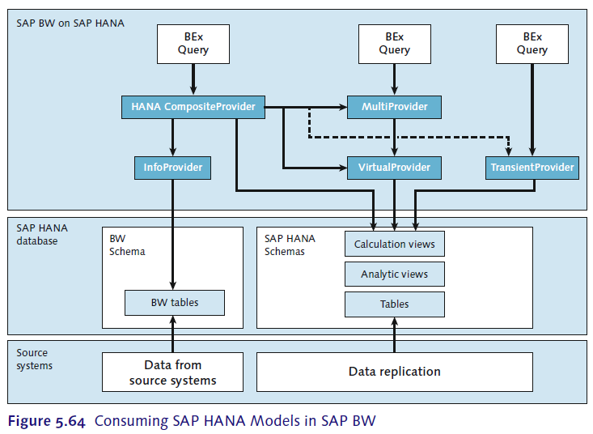

去年十一月份做了公司内的SAP BW on HANA的POC项目，所谓POC就是Prove Of Concept-可行性验证的意思，当时通过仔细阅读实施文档，之后自己总结了一个笔记，算是对今后做HANA相关的BW项目有了一定的原始知识积累。现在差不多半年时间过去了，有一些知识点自己也忘记的差不多了，今天又特地复习了一下，在这里就起一篇文章来回顾回顾，主要内容还是基于之前的学习笔记。
本文目录：
-SAP BW ON HANA基础介绍
SAP HANA是一个高效的SAP数据库技术，其核心特征是基于内存的运算，所有的数据都被直接的存放在内存中，因此在处理大数据量时，性能会远远高于传统的基于硬盘的数据库技术，而且SAP HANA并不仅仅只是硬件上基于内存这么简单，它还提供了一整套的软件解决方案。所以，当购买SAP HANA时，得到的会是预装好SAP HANA相关软件的，并在操作系统层面进行优化过的服务器。
SAP BW on HANA是集合了SAP BW和SAP HANA的优势，数据都存储与SAP HANA的基于内存的数据库之后，本身的速度就得到了提高，另外得益于SAP HANA的code push-down，使得代码逻辑的执行效率也有了显著的提高，例如在激活DSO的数据时，效率和原先普通的BW系统不可同日而语，另外还引入了新的建模方式如open DSO, CompositeProvider，可以对原先的ETL过程进行流程上的简化和优化。
如果SAP ERP系统也是运行在SAP HANA平台上，则可以在没有SAP BW系统的情况下，完成数据的分析与报表的展现。用的到工具有SAP Lumira，SAP Analysis Edition for Office，或者有SAP BO的可以直接基于SAP HANA Views创建Dashboard。SAP HANA Views的建模过程，则是需要在SAP HANA Studio中进行。这种方案的缺点是没有预定义的数据模型的报表模版，所有的建模工作都需要手工从零开始，因而SAP提供了新的解决方案SAP HANA Live。SAP的目标的要让SAP的产品如苹果般易用，如谷歌般快速，SAP HANA平台的出现对实现这样的目标有着非常重要的作用。
现有BW系统的局限性：
1. 报表执行的效率低，所需要的时间长
2. 执行数据抽取和转换所需要的时间长
3. 数据冗余
4. 系统运维工作量大
使用SAP BW on HANA的优势:
-SAP BW on HANA建模
在BW on HANA中,要改变的第一点就是再也不需要为了查询的效率而构建InfoCube了，基于DSO的查询效率在这里会变得更好，如果query是建在MultiProvider之上的，在此可以将MultiProvider中的InfoCube直接替换为下一层的DSO。这样做的好处一方面是减小了数据冗余，节省了内存的占用，另一方面也减少了一步数据抽取的时间。
不过，以下几种情况仍然需要保留InfoCube:
1. 将InfoCube替换成DSO时需要耗费大量的工作
2. DSO到Cube的Transformation中含有复杂的逻辑处理
3. 用到了non-cumulative key figures，如Inventory相关的Cube
4. 用到了实时InfoCube来实现BIIP的一些功能
5. 用到了virtual InfoProvider
6. 大于16个主键的情况
可以将这些情况下保留的InfoCube替换为SAP HANA-Optimized InfoCube，而MultiProvider也会被SAP HANA CompositeProvider替换。
SAP BW on HANA的一些新功能:
Smart Data Access
通过在SAP HANA中构建虚拟表来直接访问第三方数据库的数据表，再将此虚拟表作为SAP BW on HANA的数据源,这样就不需要将第三方数据库表中的源数据存取到BW本地。
Open ODS View
如果说上面的Smart Data Access类似一个虚拟的数据源的各方面，Open ODS View就是一个虚拟的DSO，通过构建这样的DSO可以直接的访问到下层数据源中的数据，这个下层的数据可以是SAP BW 数据源，数据库表，或基于Smart Data Access的虚拟的表，另外可以在Open ODS View上直接构建BEx Query。Open ODS View的创建可以在SAP BW GUI中也可以在BW Modeling Tools中进行。
在RSA1中创建Open ODS View：
从数据源选择需要的字段，并给字段分配InfoObject，如果没有手动分配InfoObject，SAP BW会自动分配一个默认的。
可见通过构建基于Smart Data Access虚拟表的Open ODS View可以很快的获取到源系统中的数据，虽然这不能方便的实现复杂的数据模型，但是可以非常方便快速的构建原型。
The HANA CompositeProvider (HCPR)
理解上HCPR是用来替换之前SAP BW中的MultiProvider和InfoSet的，可以处理union和join。最新的HCPR不能在SAP BW GUI中创建，要在BW Modeling Tools中创建，但是创建之后在SAP BW中可以看见并可以正常的传输。SAP建议按照如下方法使用HCPR：
1. 替换MutiProvider
2. 替换InfoSet，除非链接是time dependent 或有key date的
3. 尽可能使用Inner Join
4. 如果可以确保引用完整性，则可以在Output Tab下打上Corresponding标记提高效率
5. 如果需要使用Navigation attributes的话，则必须要将"DIRECT USAGE OF ASSOCIATED OBJECT BY NAME"选中
Operational Data Provisioning (ODP)
通过ODP的方式，源数据不需要再临时存储于PSA中，而是直接从源系统中抽取。ODP同样支持Delta抽取，变化的数据在源系统被存放在ODQ中(Operational Delta Queue)，而这个ODQ可以将Delta数据提供给多个SAP BW系统：


要使用如上的ODP架构的话，需要在BW on HANA系统中新建ODP源系统，在RSA1下Source System目录里可以看到已经预先多了ODP相关的几个目录，根据源系统的类别在相应的目录下建立ODP源系统:
至此可以直接从此ODP数据源通过DTP将数据抽取至相应的上层InfoProvider，如果这个上层的InfoProvider 是之前提到的Open ODS View的话，则此时数据没有存在Open ODS View中也没有存在PSA中,而是直接存在的源系统中，这样如果在此Open ODS View上构建了Query，则能实时的体现源系统的数据，这样会对源系统的性能造成一定的负担，但是如果源系统的数据是存储于SAP HANA数据库的话则可以忽略此影响。更进一步的话，可以基于此Open ODS View构建HCPR，就可以整合进一些主数据啦什么的来丰富数据。将旧的数据源替换为ODP数据源并不是必要的，然而在创建新的数据流时则需要考虑是否采用ODP数据源。
Code Push-Down in Transformations
标准流程中最显著的code push-down例子就是DSO的激活过程从SAP BW Server 移到了SAP HANA Server，从而DSO的激活过程变得异常的快速。而对于传统的Transformation来说，也可以通过code push-down来使得数据的转换过程直接在SAP HANA Server进行，毕竟数据来源和数据目的地都存在SAP HANA Server上，而如果需要将数据传送到BW Server进行逻辑处理后再又传回SAP HANA Server会显得低效。将transformations push-down到SAP HANA Server需要满足以下先决条件：
1. 直接的数据mapping
2. 直接的数据转换，如时间，单位，汇率的转换
3. 基于标准公式的mapping
4. 读取主数据的mapping
5. 使用SAP HANAScript 的 expert routine
同时数据来源可以是PSA,DSO,InfoCube,SPO,CompositeProvider,MultiProvider，而数据目标只能是DSO。如果满足以上条件在执行DTP时，作如下选择即可使的Transformation运行在HANA Server上:
Generating SAP HANA Views from InfoProviders
基于InfoPorviders生成SAP HANA Views，则可以将数据直接提供给SAP Lumira和SAP BO访问。
以下几种InfoProvider可以生成SAP HANA Views:
1. HCPR
2. DSO，需要生成SID
3. InfoCube， 需要是SAP HANA Optimized InfoCube
4. InfoObject，需要是characteristic
在BW on HANA系统中，ABAP开发需要特别注意以下几点：
1. 数据结果集越小越好
2. 传输的数据量越少越好
3. look up 这样的搜寻动作越少越好
4. 尽量避免不必要的数据抽取
具体的说以下几点可以特别注意：
1. 避免使用SELECT *
2. 尽量使用WHERE 语句
3. 在ABAP中调用SAP HANA数据存储过程
4. 尽量使用标准函数和功能
-SAP BW Modeling Tools的安装和使用
SAP HANA的开发工具都是基于eclipse的，因此在安装SAP BW Modeling Tools之前需要先安装较新版本的eclipse。在此我在本机安装的是Eclipse Luna 4.4.2。安装过程需要特别注意的是虽然本机的操作系统是64位的，但是在选择eclipse版本时要根据本机的java版本进行选择，因为我本机默认的java是32位的，所以只能安装32位的eclipse，除非要重装64位的java环境。
在装SAP BW Modeling Tools之前要先安装ABAP Development Tools，安装过程可参考以下步骤:
来源：https://tools.hana.ondemand.com/#abap
然后就可以安装SAP BW Modeling Tools了，参考步骤如下：
来源：https://tools.hana.ondemand.com/#bw
安装好后本机eclipse里可以看到前两项已经是已经安装状态：
在文件菜单下新建工程时便能选择到BW工程：
下一步之后可以看到connection里可以选择到SAP GUI里的所有系统:
选择基于HANA Server的BW系统后会自动将系统信息带过来：
接着就可以输入用户名/密码进行登录了：
在此因为暂时没有分配BW Modeling Tools的权限，所以无法进入下一个步骤，成功进入的话会显示类似下图的界面：
目前在BW Modeling Tools里能创建的对象只有HCPR和Open ODS View。
创建Open ODS View的过程如下：
创建HPCR的过程如下：
-使用SAP HANA Studio创建SAP HANA Views
SAP HANA Views的使用上类似BW中的InfoProvider，BO可以基于其之上构建报表，然而它和InfoProvider最大的不同是它并不实际储存数据，而是直接访问数据库里的数据，union，join，和一些行列的计算都直接实现，前提是其访问的数据库需要是存放在SAP HANA Server里的in-memory的，才能在性能上有明显的体现。进入SAP HANA Studio的SAP HANA Modeling界面后会看到如下初始界面：
在此可以创建三种类型的SAP HANA Views：
1. Attribute Views，一种简单的两维表，主数据，主数据描述等就可以建成这样的View，且其不能直接作为报表的来源，而是创建下面两类views的基础。
2. Analytic Views，这种view是用来模拟BW中InfoCube的多维模型的，它可以把一些attributes views和database table 连接在一起，只支持单个的连接。
3. Calculation Views，这是一种更库复杂的view，可以通过图形化界面或直接通过SQLScript构建，支持复杂的uniton和join，数据来源可以是数据库表和以上两种views。
除了以上三个主要的view之外，在SAP HANA Modeling界面里还可以创建另外几类对象：
1. Analytic Privilege，用于SAP HANA Views访问权限的管理。
2. Package，类似于BW中的InfoArea，权限控制也可以在这一层级上进行，就可以对多个SAP HANA Views同时授权。
3. Procedure，基于SQLScript或R的存储过程，有输入输出参数，可以在BW中通过ABAP调用。
4. Decision Table。
在创建SAP HANA Views之前要确保有相应的权限，然后在右侧选定了系统和用户之后可以开始创建SAP HANA View：
可以选择是图形化界面进行创建还是通过SQLScript进行创建，此选项一旦选定后无法更改，图形化创建界面如下：
在图形化建模的界面中有三个主要的的元素：
1. Data Foundation，选定的作为数据来源的数据库表会显示在此元素里。
2. Logical Join，表和表之间的关联逻辑显示在此元素里。
3. Semanctics，最终的SAP HANA View 展现的字段显示在此元素里。
通过以下四个步骤来创建一个SAP HANA View：
1.添加所需要的数据来源，可以是数据库表也可以是别的SAP HANA View，在添加的过程中需要将表与表之间的关联也设置好。
字段前面的圆点只有橙色的会在最终的view里显示。
2.看是否需要编辑这些数据来源，增加一些calculated 字段，筛选条件或参数等。
在上图的右上角可以看到显示的输出字段，同时可以定义calculated columns， input parameters，和restriction columns。
3.将所有字段分成characteristics和key figures或是decriptions，定义key figures的聚合方式，如下图显示某个字段的设置界面：
4.检查并激活SAP HANA View。
-SAP HANA-Optimized InfoCubes 基于SAP HANA 优化过的InfoCubes
在SAP BW on HANA系统,SAP建议是可以直接在DSO层构建报表，如果介于之前说到的一些理由仍然需要保留InfoCube的话，可以将其转换为SAP HANA-Optimized InfoCube，如果是新建的InfoCube默认就是SAP HANA-Optimized InfoCube。两种InfoCube的模型区别如下图:
这样的改变有点像传统BW Cube模型中的Line-item Dimension。在传统的模型中有时候需要将Cube数据进行压缩，数据会从F表存放到E表，同时也失过了request id等信息，无法基于request对数据包进行删除，而在SAP HANA优化过的Cube中无需再对Cube进行压缩，除非Cube真的非常庞大，压缩可以节省一定的数据抽取时间和节约一点内存空间，对报表效率的影响并不大。同样传统Cube的一些限制在这里也是相同的，233个key figures，16个dimension，248个characteristics。
转换的T-code: RSMIGRHANADB
以下是一个coverting的例子，转换之前的Cube样子：
查看一下这个Cube当前对应的表：
转换完成之后的表：
-处理链的简化

-LSA++ Layered Scalable Architecture
传统的LSA架构如下图所示：
基于LSA架构的数据流示例如下：
LSA++架构如下图：
基于此架构构建数据流的时候可以有两种选择：
-Non-Active Data概念
理论上在SAP HANA系统里所有的数据都应该被存放在内存中，但是考虑到内存的大小有限制，数据的量又在不断的增加，而且有一部分数据并不是会经常的使用到，对于这一部分数据可以定义为Non-Active Data。为了实现Non-Active Data的管理，SAP HANA使用了一个UPLOAD_PRIORITY属性，可以设置库0到9的不同优先级，数值越大，优先级越高。而在SAP BW on HANA中,则只使用0,5,7三级，SAP BW的相关表默认是5级，PSA，写优先的DSO默认是7级。
可以通过T-code： SE14 ，goto–storage parametes查看优先级，这个参数的修改不能传输。
根据数据的访问频率不同，又可以将数据分为Hot, Warm,Cold三类：
Hot的数据需要一直保存在主内存中
Warm的数据可以保存在次内存中，根据需要可以将优先级设为7级
Cold的数据则不建议存在SAP HANA里。
-在SAP BW系统中使用SAP HANA 模型

如上图所示，可以将SAP HANA Views和BW的表合在一个InfoProvider里，然后基于它创建BEx Query。典型的应用是SAP HANA Views里存放了一些transaction data，而这里面有例如物料，客户或供应商这样的主数据，则可以通过这种方法将其和BW里的主数据表联接起来。SAP推荐使用HCPR，在没有BW Modeling Tools的权限的情况下，可以使用TransientProvider或者VirtualProvider。
-SAP BW on HANA 报表开发
为了满足大数据分析，实时数据分析，基于企业级的数据仓库的数据分析，简单的移动化的数据分析，SAP提供了如下图所示的BI架构：
可见不管是普通的SAP BW还是基于HANA的BW，目前SAP提供的报表工具还是以BO为主：
BO的客户端工具主要有几下一些：
表面上看，有了SAP HANA之后用户会考虑是否还仍然需要上SAP BW，毕竟SAP HANA也可以产出一些报表，SAP也提供了没有BW的解决方案SAP HANA Live，如下图所示的架构:
但是基于以下几点原因，SAP BW还是有一定分量的价值的:
1. 不同数据源之间的数据整合
2. 数据的充分准备与主数据的丰富
3. 数据访问权限的控制
4. 大量历史数据的分析
5. 计划模块的功能
所以用户在选择自己的BI架构时，可以根据实际需要进行选择：